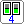
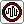
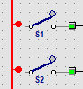

Push button
Push buttonInput components are the start of every circuit: they give a signal (on = 1, off = 0) at their output. You operate them with the mouse.
Every input component has an output on its right-hand side. That is where you start a wire to the rest of the circuit. See Connections.
If there are power rails on the panel, plug the inputs in on the right of a + rail. The voltage of that rail decides whether the input can give a signal (from 2 V).
Push buttonThe output is on as long as you hold the button down with the mouse. When you let go, the output goes off. Use a push button for short signals, for example to make a counter count one step.
 Switch
SwitchClick the switch to turn it on or off. It stays in that position until you click again.

DIP switchUse it to enter a number, for example to write it into a memory block.
Gives a pulse at regular intervals: the output keeps switching on and off, about every 0.3 seconds. Click the button at the bottom to start the generator; click it again to stop it. The lamp at the top blinks with the pulses.
Frequency: right-click the generator and choose Frequency: 0.5 Hz (a pulse every 2 s), 1 Hz, 1.7 Hz (default), 2.5 Hz or 5 Hz. The chosen frequency is shown small on the generator and is saved in the panel. You can also change it while the generator is running.
Ideal for making a counter run by itself or a lamp blink.

Light sensorSimulates a sensor that reacts to light. Click the sensor to choose “light” or “dark”; the output follows.
Simulates a temperature sensor. Click the sensor to choose “warm” or “cold”; the output follows.
A limit switch reports where a person or a cart is. It is in the input, as with a real machine and a PLC: the machine itself is an output, its limit switches are inputs. It follows the person or the cart on the panel without a wire. Its output is on the right; connect it to an input of LogicRun.
